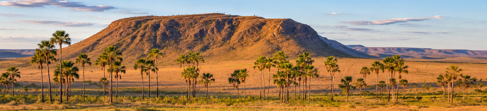

CERRADO -
CLIMA
O Cerrado apresenta predominantemente o clima Tropical de Savana, caracterizado por duas estações bem definidas. O verão costuma ser quente e chuvoso, concentrando grande parte das precipitações entre outubro e abril, enquanto o inverno é marcado por um período prolongado de estiagem, geralmente entre maio e setembro. Essa alternância entre períodos úmidos e secos é uma das principais características climáticas do bioma.
A precipitação anual varia aproximadamente entre 1.200 mm e 2.200 mm, dependendo da região. Durante a estação seca, a umidade relativa do ar pode diminuir bastante, aumentando a ocorrência de queimadas. As temperaturas médias anuais também variam conforme a localização, ficando geralmente entre 22 °C e 27 °C.
Devido a essas condições, a vegetação desenvolveu adaptações para sobreviver à escassez de água e às temperaturas elevadas, como raízes profundas, que alcançam reservas de água no solo, cascas grossas nos troncos e folhas resistentes, que ajudam a reduzir a perda de água.

ASPECTOS
GEOGRÁFICOS
Domínio Morfoclimático
CERRADO- Pedro H.N.A - Luís Fellipe - Gustavo Cruz - Gabriel Gutierrez - Marcos Roberto - Murilo Niêto - Ryan Alves - 01DS -